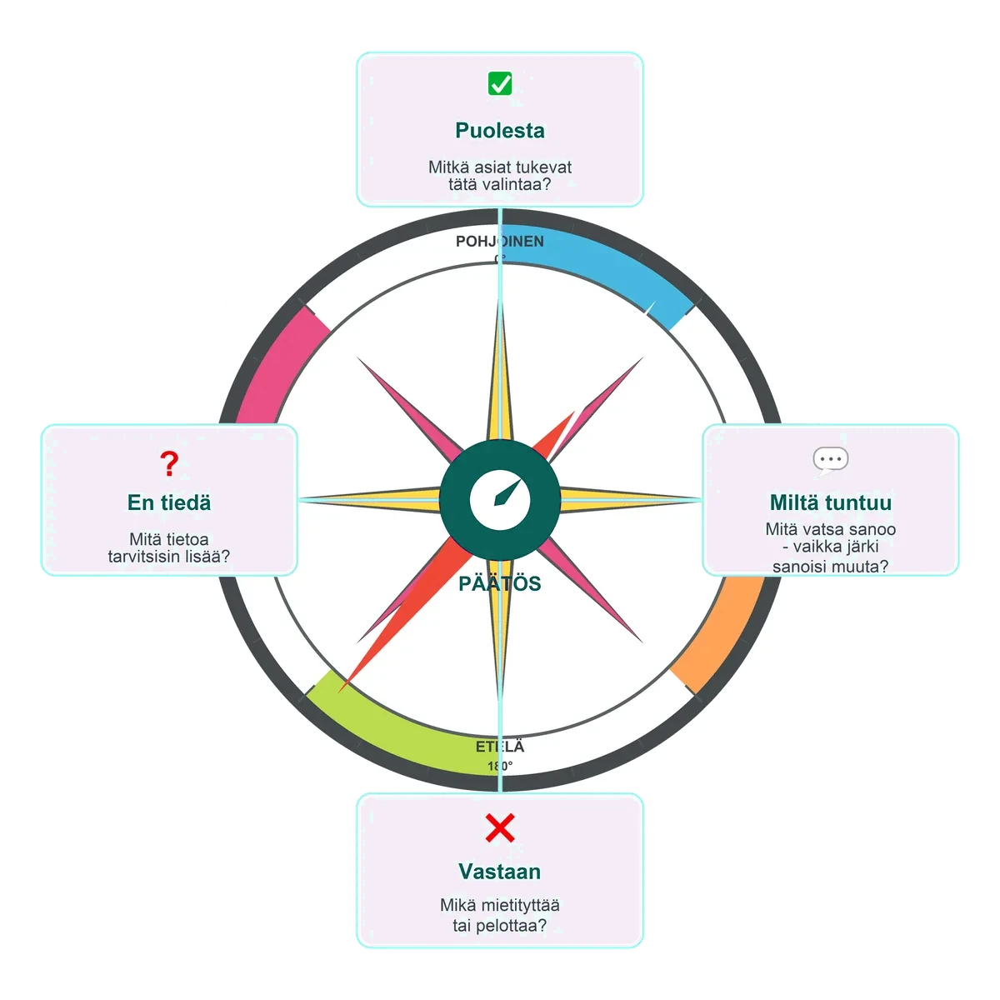

Neuvonantaja — päätöksentekoa yhdessä
Ryhmätehtävä
Vaihe 1 · Yksilö
Päätöstyökalu
Päätöksen vaikein kohta on vaihtoehtojen punninta — siihen käytät päätöskompassia. Se on neljän kohdan työkalu:

Täytä oma päätöskompassi
Kirjoita valinta, jota mietit — omasi tai valitsemanne henkilön. Täytä sitten neljä kohtaa. Vastaukset tallentuvat vain tähän selaimeen, joten voit jatkaa myöhemmin.
Mitkä asiat tukevat tätä valintaa?
Mikä mietityttää tai pelottaa?
Mitä vatsa sanoo, vaikka järki sanoisi muuta?
Mitä tietoa tarvitsisin lisää?
Vaihe 2 · Ryhmä
Valitse henkilö ja neuvo
Ryhmänne valitsee yhden henkilön. Käykää päätöstyökalu läpi hänen puolestaan — mitä te neuvoisitte?
Joonas haluaisi autoasentajaksi — se on aina kiinnostanut. Isä toivoo kuitenkin lukiota: "Sieltä pääset joka paikkaan." Kaveriporukka menee lukioon. Arvosanat: 7–8. Joonas miettii: haluanko minä lukioon vai meneekö sinne siksi, että muutkin menevät?
Aisha ei tiedä vielä, mitä haluaa. Kielistä ja piirtämisestä on pitänyt aina, mutta niistä ei tunnu saavan töitä. Hän pelkää tekevänsä väärän valinnan — "Entä jos kadun?" Hakuaika lähestyy ja se stressaa.
Mikael haluaa lukioon, mutta lähimmät lukiot ovat kaukana — pitäisi muuttaa tai tehdä pitkä koulumatka. Hän ei halua lähteä pois kotoa. "Pitääkö minun luopua lukiosta sen takia?"
Ryhmänne tehtävä — käykää järjestyksessä:
- Lukekaa valitsemanne henkilön tarina.
- Täyttäkää päätöstyökalu hänen puolestaan:
Puolesta · Vastaan · En tiedä · Miltä tuntuu - Sopikaa ryhmässä: mitä neuvoisitte hänelle?
- Valmistautukaa kertomaan yksi neuvo koko luokalle.
Vaihe 3 · Koko luokka
Neuvo ääneen
Jokainen ryhmä kertoo yhden neuvon valitsemalleen henkilölle.
Mistä asioista ryhmät olivat yhtä mieltä?
Mistä eri mieltä — miksi?
Miksi toisen päätökseen on niin vaikea antaa neuvoa? Mitä se kertoo päätöksenteosta?